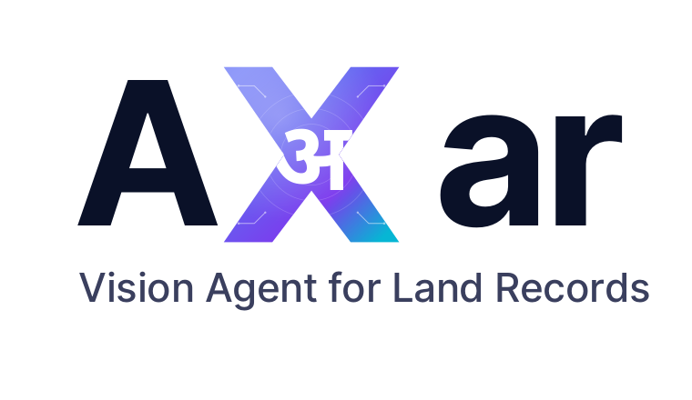

Land Records, Reimagined
A vision-first approach to digitizing the paper that holds up property, credit, and citizenship — for governments, banks, courts, and the organisations downstream of land.
Land records are the connective tissue between a citizen and the state. They underpin property transactions, credit, taxation, dispute resolution, urban planning, agricultural subsidies, and disaster relief. And in most of the world, they still live on paper — bound registers in district offices, hand-written in regional scripts by generations of revenue officers.
Digitizing them has been on every government's roadmap for two decades. The reality has been less encouraging. Programs launch with a 2-year plan, hire armies of contractors to type the data into vendor systems, and quietly stretch into 7-year drags. Cost overruns are routine. Quality is uneven. And at the end of it, the digital database often differs in subtle ways from the paper original it was supposed to mirror.
Something is changing. The combination of vision-language models and agentic orchestration has fundamentally shifted the math. What used to take a district 18 months and a team of 200 typists can now be processed in weeks, with a small operations team and an AI agent doing the reading. This post is about why that shift is happening, and what it means for the agencies, banks, courts, and researchers who depend on these records.
Why Digitization Keeps Stalling
Most digitization narratives focus on scanning. That part is solved — paper goes through a feeder, a high-resolution image comes out the other side. The actual choke point is what happens after the scan: turning a photograph of a hand-written page into structured, queryable, legally-citable data.
Optical Character Recognition was designed for printed text in Latin scripts. It does not work on hand-written Devanagari, Tamil, Telugu, Bangla, or Gurmukhi — the scripts in which most South Asian land records are kept. Character-level accuracy on these inputs is typically below 50%, which means more than half of every extracted line is wrong. At that error rate, the OCR output is less useful than no output at all.
Manual data entry has been the fallback for two decades, and it carries its own problems: slow throughput (40–60 records per operator-day at best), high cost per record, fatigue-driven errors, and no audit trail to explain why a particular field reads the way it does.
No layout awareness. No context. Every uncertain stroke becomes garbage that a human has to fix line-by-line.
Reads the whole page in context. Each field carries a confidence score. Low-confidence fields are routed to a human reviewer; the rest pass through.
A vision agent reads the page, not the characters. It sees the column structure, the marginalia, the cross-outs, the red-ink mutations, the way today's record relates to yesterday's. It draws on the village's history — what came before, who owned which parcel last year, what crops were grown over the last five seasons. And it produces structured records with confidence scores attached to every field, so a reviewer can spend their attention where the model is genuinely uncertain.

Axar is the vision agent we built at Xentovia for land record digitization. The name comes from the Sanskrit अक्षर — letter, character, imperishable. Its job is reading the imperishable: the registers that hold up land, family, and inheritance.
How Axar Works
Axar handles the full pipeline — from raw scan to structured database — as a single agentic flow. Each stage is the answer to a specific failure mode of legacy digitization.
Intake
Bound registers, single-page scans, mixed orientations — auto-detected and prepared.
Classify
Each page is identified by register type and column structure before extraction begins.
Extract
The vision agent reads the page in context, with village history and prior pages loaded as memory.
Review
Operators see image and extraction side-by-side. They confirm, edit, or reject — every action audited.
Export
Outputs land in the format the receiving system already expects — CSV, XML, JSON, vendor-aligned.
Two design choices distinguish Axar from earlier attempts. Progressive context: every page the agent reads enriches the village's working memory, so by page 50 it knows the local owner registry, the typical handwriting of the patwari who wrote that register, and the noiyat patterns that village uses. Honest confidence: a field that the agent is unsure about is flagged and routed to review, never silently smoothed over. The system errs on the side of telling the truth about what it does not know.
Why Government Should Care
For revenue and land departments, vision-first digitization changes four economic constants:
- Speed. A district that took 18 months through traditional contractors fits inside a 6–10 week window. The bottleneck moves from data entry to scan logistics — and even those run in parallel.
- Cost. Traditional pipelines pay per record entered. Vision-agent pipelines pay per page read by the agent, with a fraction allocated to human review. Total cost-per-record drops by an order of magnitude.
- Accuracy. Field-level accuracy on production workloads consistently runs above 95%, with confidence scoring on every field. Every value is traceable back to a bounding box on the source image, so disputes resolve in seconds rather than days.
- Compliance. Data residency, audit logs, encryption at rest and in transit. Axar runs in your cloud, your on-prem cluster, or air-gapped — your data never leaves the perimeter you control.
There is also a softer benefit that matters more than any of the above: pace of completion. Programs that drag for seven years lose their political mandate, their staffing continuity, and their original technical lead. Programs that ship in months keep momentum, capture lessons, and earn the next phase of investment.
Why Banks, Insurers, and Industry Should Care
The same engine that helps a state revenue department also helps every organization downstream of land records.
Banks & NBFCs
Mortgage origination, title verification, KYC on land-backed credit. A citizen's land document goes from scan to validated extraction in minutes.
Title & Insurance
Historical title trees — who owned this parcel in 1995, in 1973 — are the bulk of underwriting cost. A digitized historical register cuts underwriting from weeks to hours.
Real Estate, Mining, Infra
Parcel-level intelligence along a proposed alignment, in a target acquisition area, or on competing claims — without physically visiting district offices.
Legal & Litigation
Inherited-claim evidence, mutation history, encumbrance trails — searchable across decades of registers instead of physically pulled from cardboard folders.
Research & NGOs
Longitudinal land-use studies, gender-of-ownership analysis, tribal land rights documentation — the same paper, finally queryable.
Public Sector at Large
Court archives, civil registers, settlement records, historical revenue surveys — anything in bound volumes with hand-written entries.
What "Good" Looks Like
A few principles we have learned the hard way while building Axar — they apply to any vision-AI program touching legacy paper:
- Outputs must drop into existing systems. The most elegant JSON is worthless if your IT vendor expects a specific CSV layout with a specific date format. Axar exports byte-compatible with whatever the receiving system already consumes.
- Human-in-the-loop is a feature, not a fallback. AI proposes; the operator approves. Every operator action makes the system smarter — flagged corrections feed back into per-village owner registries, per-district format hints, per-handwriting models.
- Honest confidence beats false certainty. A field flagged as low-confidence and routed to review is more valuable than a field that is silently wrong.
- Localization is not optional. A platform built for Latin-script printed text and retrofitted for Devanagari handwriting will keep losing accuracy at scale. Axar was built script-first, with regional handwriting and domain vocabulary at its core.
Where to From Here
We are working with revenue departments, financial institutions, and research organizations to bring Axar to more land-record corpora across India and beyond. If you have a digitization program that has stalled, a backlog of paper that you have been told is "too hard", or a downstream use case that depends on land data being structured and searchable — we would like to hear from you.
Reading the imperishable, at scale.
Pilot a single register or lot — fixed-fee, fixed-time, no commitment.
Book a Demo